扉页
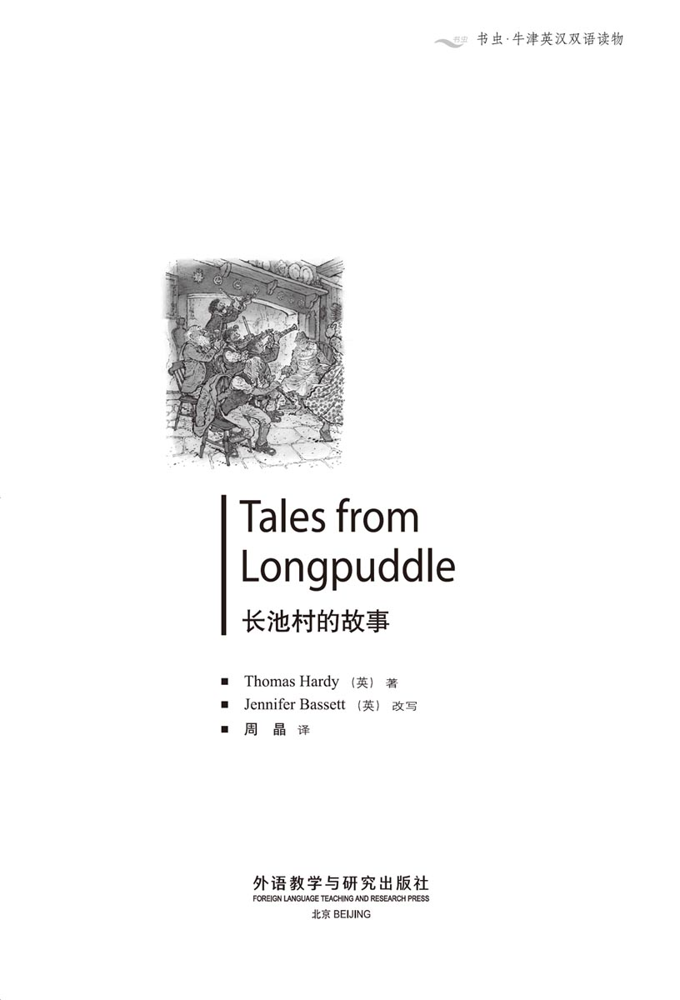
版权页
京权图字 01-2006-3295
Originally published by Oxford University Press, Great Clarendon Street, Oxford. © 2003
This edition is licensed for sale in the People's Republic of China only and not for export therefrom.
'Oxford' is a registered trademark of Oxford University Press.
只限中华人民共和国境内销售，不包括香港特别行政区、澳门特别行政区及台湾省。不得出口。
图书在版编目（CIP）数据
长池村的故事＝Tales from Longpuddle／（英）哈代（Hardy, T.）著；（英）巴西特（Bassett, J.）改写；周晶译．—北京：外语教学与研究出版社，2007.7（2015.1 重印）
（书虫·牛津英汉双语读物）
ISBN 978-7-5600-6808-4
Ⅰ．长… Ⅱ．①托… ②巴… ③周… Ⅲ．①英语—汉语—对照读物 ②故事—作品集—英国—现代 Ⅳ．H319.4：I
中国版本图书馆CIP数据核字（2007）第102691号
出版人： 蔡剑峰
责任编辑：余 军
封面设计：孙莉明
出版发行：外语教学与研究出版社
社 址：北京市西三环北路19号（100089）
网 址：http://www.fltrp.com
版 次：2007年7月第1版
书 号：ISBN 978-7-5600-6808-4
* * *
凡侵权、盗版书籍线索，请联系我社法律事务部
举报电话：（010）88817519 电子邮箱：banquan@fltrp.com
法律顾问：立方律师事务所 刘旭东律师
中咨律师事务所 殷 斌律师
内容简介
内容简介
过去，人们很少到别的地方去。他们往往会在一个村子里住一辈子。村里的人都彼此熟识，连别人家里的父母、孩子，甚至祖辈都一清二楚——这样的地方恐怕没有什么秘密可言。
所以，当约翰·拉克兰的儿子旅居美国30年后重返长池村的时候，他知道许多人家肯定还住在那里。他在城里搭上去长池的马车，一路上向同行的乘客打听村里的新闻。
乘客们很乐意跟他说说村里的事情。托尼·凯茨和他那几位姑娘的故事很有趣——哦，没错，拉克兰先生一定得听听这个。另外，安德鲁和简，还有牧师和狐狸又是怎么回事？邮局女局长给拉克兰先生说了这段故事，接着学校的老师又给他讲了为什么教堂的乐队从20年前就不拉小提琴了。而且，拉克兰先生还记得妮蒂·萨金特吗？还记得啊，于是一位农夫的老婆波尔太太又说起了妮蒂是怎么把她叔叔的房子弄到手的……
TALES FROM LONGPUDDLE
TALES FROM LONGPUDDLE
In the old days, people did not move around so much. They often lived in the same village all their lives. Everybody knew everybody, knew their parents, their children, their grandparents, and probably knew all their secrets too.
So when John Lackland's son returns to the village of Longpuddle after thirty years in America, he knows he will find many of the same families there. In the town he catches the Longpuddle wagon, and on the way to the village he asks the other passengers for news.
The passengers are very happy to tell him stories. There's a good story about Tony Kytes and all his young women — oh yes, Mr Lackland must hear that one. And what about Andrew and Jane, and the parson and the fox? The postmistress tells Mr Lackland that story, and then the schoolteacher tells him why the church band stopped playing their fiddles in the church twenty years ago. And does Mr Lackland remember Netty Sargent? He does, and so Mrs Pawle, a farmer's wife, tells him what Netty had to do to get her uncle's house...
目录
Contents
目 录
Andrew, Jane, the Parson, and the Fox
“书虫”免费增值服务上线！
第一时间获得习题答案、检验阅读水平、记录学习轨迹
更多精彩内容，登录http://2u4u.fltrp.com/reading
THE WAGON TO LONGPUDDLE
The Wagon to Longpuddle
It is a Saturday afternoon in autumn, in the High Street of a well-known town. A large carrier's wagon stands outside the Town Hall, and the horses wait quietly, eating from their nose-bags. On the side of the wagon, in large yellow letters, are the words, 'BURTHEN, CARRIER TO LONGPUDDLE.'
It is now half-past three by the clock on the Town Hall, and the wagon will leave at four. Slowly, people begin to arrive and take their seats. First, two women climb up, and then a third, who is the postmistress at Longpuddle. At five minutes to four, more people arrive. There is Mr Profitt, the schoolteacher, and Christopher Twink, the builder, with his old father. Then come a farmer and his wife, and last of all, Mr Flaxton, the church clerk.
By now Burthen, the carrier, is getting the horses ready, and soon he climbs up to the driving seat.
'Is everybody here?' he asks the passengers.
The people who are not there do not reply, of course, and a minute or two later the wagon begins to move along the High Street. When it comes to the bridge over the river at the bottom end of the town, the postmistress suddenly calls out to the carrier.
'Mr Burthen,' she says. 'There's a man calling you, over there by the corner. I think he wants you to stop for him.'
Burthen stops the wagon, and waits while the man comes towards them. 'Now who's that, then?' he says. 'That's not a Longpuddle man.'
'I've never seen him before,' says the schoolteacher.
Then the stranger arrives. 'Can you take another passenger for Longpuddle?' he asks.
'We can take one more,' says the carrier. 'Where are you from, sir? You're not from round here, are you?'
'I am,' says the stranger. 'I was born at Longpuddle, and my father and grandfather before me.'
The postmistress is watching him with interest. 'Oh!' she says suddenly. 'I know who you are! You're John Lackland's son — he who went to America thirty years ago with his wife and family.'
'That's right,' says the stranger, smiling. 'John Lackland was my father. And now I've come home to have a look at the old village, and find some old friends. Are the same families still living there?'
'Many of them are,' says the church clerk. 'Which names do you remember?'
'There was a boy called Tony Kytes, I remember.'
'Oh yes,' says the clerk. 'Tony Kytes is a married man now. Lives over at Mellstock, I think.'
'And he nearly got married to three women,' laughs the carrier. 'There's a good story about Tony and all his young women.'
'Tell me about it,' says John Lackland's son.
And this is the carrier's story.
town hall a public building used for a town's local government 镇公所
clerk n. a lay officer of a church 教堂执事
stranger n. a person who is unfamiliar 陌生人
married adj. having a husband or wife 已婚的
去长池村的马车
去长池村的马车
这是秋天一个周六的下午，一个众所周知的小镇上，一辆运客的马车正停在大路上，就在镇公所门口，拉车的几匹马安静地等在那里，就着马粮袋吃东西。马车的一侧用黄色的大字写着“伯森，去往长池村的马车”。
这会儿，镇公所的大钟指到了3点半，马车准备4点出发。渐渐地，开始有人来搭车，各自找了座位安顿下来。最先上来的是两位妇人，接着上来的是长池村邮局的女局长。差5分4点的时候，又来了几位乘客，有学校教师普罗菲特先生，建筑工克里斯托弗·特温克和他的老爹。接着又来了一个农夫和他的老婆，最后来的是教堂执事弗拉克斯顿先生。
这个时候，车夫伯森正在给马做准备，不一会儿他自己也登上了车夫的座位。
“都到齐了吗？”他问乘客们。
当然，没到的人也没办法回答他，于是一两分钟之后马车开始沿着大路出发了。马车走到镇子尽头的小河，正在过桥的时候，邮局女局长突然叫住了车夫。
“伯森先生，”她说，“那边的拐角上有个人在叫你。我想他可能想让你等他一下。”
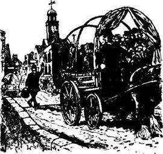
伯森停下马车，等那人赶过来。“那人是谁？”他说，“他不是长池村的人。”
“我以前从没见过他。”学校教师说。
陌生人赶到马车跟前，问：“你们能再搭一个人去长池村吗？”
“我们可以再搭一个人，”车夫说，“你是从哪儿来的，先生？你不是这附近的人，对吧？”
“我是这儿的人，”陌生人说，“我就生在长池村，我的父亲和祖父也都生在那里。”
邮局女局长饶有兴趣地打量着他。“哦！”她突然说，“我知道你是谁了！你是约翰·拉克兰的儿子，他30年前带着老婆孩子去了美国。”
“没错，”陌生人笑着说，“约翰·拉克兰是我父亲。现在我回家来看看老村子，拜访几位老朋友。过去的那些人家还住在那儿吧？”
“许多人家都还在，”教堂执事说，“你都记得哪些名字？”
“我记得过去有个男孩叫托尼·凯茨。”
“哦，是的，”教堂执事说，“托尼·凯茨现在已经结了婚。我想他搬到麦尔斯托克去了。”
“而且他差点儿娶了三个老婆，”车夫哈哈大笑起来，“托尼和他那几个姑娘可有一段儿不错的故事。”
“跟我说说。”约翰·拉克兰的儿子说。
于是，车夫讲起了这个故事。
Tony Kytes Finds a Wife
Tony Kytes Finds a Wife
I shall never forget Tony's face. It was a little, round face, with bright black eyes. He never smiled very much, but he was a great favourite with the women. And he liked them, oh yes! One week you saw him walking along with one girl, the next week you saw him with another girl.
But in the end he decided that Milly Richards was the girl for him. She was a nice, sweet little thing, and people soon said they were engaged to be married.
One Saturday Tony went to market, to do some business for his father, and he drove the wagon home in the afternoon. When he got to the hill just outside the town, he saw Unity Sallet by the side of the road. He knew Unity very well. Once, he nearly asked her to marry him — but then he got together with Milly.
When Tony came up to her in the wagon, Unity said, 'My dear Tony, can I ride home with you?'
'Of course you can, my love,' said Tony. 'I couldn't say no to you, could I?'
So Unity smiled, jumped up into the wagon and Tony drove on up the hill.
'Tony,' she said, in a soft little voice, 'why did you leave me for that other girl? How is she better than I am? I'll be a fine wife, and a loving one, too. And you've known me for a long time, haven't you, Tony?'
'Yes, I have,' said Tony. 'Yes, that's very true.'
'And — can you say I'm not pretty, Tony?'
He looked at her for a long while. 'I really can't,' said he. 'No, I think you're the prettiest girl in the world.'
'So I'm prettier than she is, am I?'
Luckily, before Tony could answer, he saw a girl's hat over the hedge round a turning in the road. He knew the hat very well — it was Milly's hat.
'Unity,' said Tony quickly, 'here's Milly coming now. I'll be in terrible trouble if she sees you with me. Now, dearest Unity, we don't want any fighting or anything, do we? So will you lie down in the back of the wagon, under the tarpaulin? Just until Milly has passed? And I'll think about what you said, and perhaps I'll put a loving question to you, and not Milly. Nothing is decided yet between her and me, you know.'
So Unity lay down under the tarpaulin in the back of the wagon, and Tony drove on to meet Milly.
'My dear Tony!' Milly said crossly, when he came near. 'How late you are!'
'Late?' said Tony. 'Were you waiting for me?'
'Of course I was!' said Milly. 'You asked me to meet you, to ride home with you. Don't you remember?'
'Oh dear!' said Tony. 'Yes, yes, I did. I remember now. Oh dear — I mean, jump in then, Milly dear!'
So Milly climbed into the wagon and Tony drove on. They talked about this and that, and looked at the trees and the birds. Then they came to a house by the road, and looking out of an upstairs window was Hannah Jolliver. Now Hannah was a tall, good-looking girl, with long red hair. And Tony was in love with her for a long time — before Milly, and before Unity.
'My dear Milly,' he said, in a whisper, because he didn't want Unity to hear, 'there's a young woman looking out of that window, who wanted to marry me. I'm afraid she's going to be angry, because she's found out that I'm going to marry you. And you're a prettier girl than she is. So, Milly, will you help me?'
'Of course, dearest Tony,' said Milly.
'Then will you hide under the empty sacks just here in the front of the wagon, behind the seat? She hasn't seen us yet, and then there won't be any angry words.'
'Well, all right, if it helps you, Tony,' said Milly. She didn't really want to, but she got down behind the seat and hid under the sacks. So there was Milly hiding in the front of the wagon, and Unity hiding in the back.
Tony drove on past the house, which was Hannah's uncle's house, and Hannah looked down from the window and called out to him. 'Aren't you going to ask me to ride home with you?'
'Oh — yes, of course!' said Tony, who didn't know what to say. 'But aren't you staying at your uncle's?'
'No, I'm not,' said Hannah. 'Can't you see I've got my hat and coat on? How can you be so stupid, Tony?'
'Um, yes, um, then you must ride home with me, of course,' said Tony, who was beginning to feel hot and uncomfortable. So he stopped the wagon, while Hannah ran downstairs and got in beside him.
Tony drove on again, and then Hannah looked at him out of the corner of her eye. 'This is nice, isn't it, Tony?' she said. 'I like riding with you.'
Tony looked back into her eyes. 'And I like riding with you,' he said after a while. Then he looked into her eyes again — a good, long, slow look. He began to like her more and more. And then he couldn't remember why he ever wanted to marry Milly or Unity. He moved nearer to Hannah on the seat, and they talked in soft little whispers. And after a time Tony said, 'Ah, my sweet Hannah!' and took hold of her hand.
'I'm sorry that you're going to marry Milly,' Hannah said, 'because I do like you very much, Tony dear.'
Tony gave a quick look behind him. 'I haven't asked her the question yet,' he whispered, 'and I'm not sure I will. I'm thinking about asking you.
'Ooooh! Leave Milly, and marry me!' cried Hannah loudly. 'Oh, how wonderful!'
At this, there was a sudden little angry scream from behind the seat, and the tarpaulin at the back moved.
Hannah looked round. 'Something's there, Tony! There's an animal in the back of the wagon!'
'No, no,' said Tony. 'It's just empty sacks, and it's the wheels that make that little screaming sound.'
But he knew that he was in trouble, and he didn't know what to do next. Then the wagon came round a corner in the road and Tony saw his father in a field. His father held up his hand, and Tony saw his escape.
'Oh, Hannah,' he said, 'can you hold the horse for a minute, while I go and find out what father wants?'
Hannah agreed, and Tony hurried into the field.
'What are you playing at, Tony?' said old Mr Kytes.
'What do you mean, father?'
'Well, if you're going to marry Milly Richards, do it. But don't go driving around the country with Jolliver's daughter. People will talk. You mustn't do it, boy.'
'Milly's there, too, father.'
'Milly? Where?'
'Under the sacks! Yes, and Unity Sallet is in there too, father, at the other end, under the tarpaulin. All three of them are in that wagon, and I don't know what to do! Which one shall I marry, father?'
'Which one of them did not ask to ride with you?'
'That was Milly, because I asked her.'
'Then marry Milly, she's the best — Hey, look!'
Tony looked round, and saw his wagon moving. He began to run across the field as fast as he could.
What was happening in the wagon? Milly, under the sacks, was the one who screamed. She began to move about, and then saw another woman's foot. So she moved along under the tarpaulin until she found Unity.
'And what are you doing here?' she asked angrily.
'I can ask you the same question,' said Unity.
'I'm engaged to be married to him, and I can —'
'Oh no, you're not,' said Unity. 'He's going to have Hannah, not you. He said it just now — we heard him.'
When Hannah heard voices under the tarpaulin, she forgot the horse and turned round. The horse decided to go home, and moved off much too quickly. The wheels of the wagon went up on the side of the field, the wagon turned over, and all three girls fell out into the road. The horse looked round and stood still.
Nobody was hurt, but when Tony ran up, the three girls were all shouting and crying and screaming.
'Oh, don't be angry, my dears! Please don't!' said Tony. They did not stop crying and screaming, so he spoke more loudly. 'I must do what's right,' he said. 'I've asked Hannah to marry me, and she's agreed —'
'Oh no, I haven't!' said Hannah, really angry now. 'You must think I'm soft in the head! I'm not marrying a man who keeps girls in the back of his wagon!'
Tony looked surprised. 'So you won't marry me, Hannah?' he said.
'Never!' said Hannah, and she walked away. Perhaps she did still want him, but she didn't want to say so in front of the other girls.
Tony didn't know what to say next. Milly was crying her eyes out, and Tony's father thought that she was the best wife for him. But you never do what your father tells you to, do you? So Tony turned to Unity.
'Well, will you marry me, Unity dear?' he said.
'Marry something that Hannah Jolliver doesn't want? Not I!' said Unity. And she walked away too.
So then it was just Milly and Tony. Milly was still crying, and Tony stood there and looked at her.
'Well, here we are,' he said at last. 'Just the two of us. We'll get married then, shall we, Milly?'
'If you like, Tony. You didn't really mean what you said to them?'
'Not a word of it!' said Tony. And then he kissed her, put the wagon back on the road, and they drove home. They went to see the parson the very next Sunday, and were married two Sundays later.
* * *
At the end of his story the carrier turns to the postmistress. 'They had a fine wedding, Mrs Weedle, didn't they? You were there, weren't you?'
'Oh yes,' says the postmistress. 'Best wedding party for years. And I've been to a lot of them. We've had some strange weddings too. Do you remember Andrew Satchel and Jane Vallens a few years ago?'
'But they got married in a different village,' says the church clerk quickly. 'Not in Longpuddle church.'
The carrier laughs. 'It's all right, Mr Flaxton. We know it wasn't you. Go on, Mrs Weedle, tell our visitor about Andrew and Jane.'
'Yes, I remember the Satchel family,' I says John Lackland's son. 'I'd like to hear that story.'
And this is the postmistress's story.
favourite n. someone who is liked and treated better than others 宠儿
engaged adj. having agreed to get married 已订婚的
loving adj. behaving in a way that shows you love someone 钟爱的
hedge n. a row of small bushes or trees growing close together, usually divide one field from another 树篱
tarpaulin n. (a sheet or cover of) heavy cloth specially treated so that water will not pass through it 防水油布
crossly adv. angrily 生气地
whisper n. soft speech produced without full voice 轻声说话
sack n. a large bag of strong, coarse material for holding objects in bulk 麻袋
uncomfortable adj. ill at ease; uneasy 不安的
scream n. a long, loud, piercing cry or sound 尖叫
escape n. avoiding (something dangerous or unpleasant) 逃避
still adv. without movement; motionlessly 不动地
soft in the head very stupid 很愚蠢的
cry one's eyes out be extremely sad and cry a lot 伤心痛哭
wedding n. the ceremony or celebration of a marriage 婚礼
托尼·凯茨讨老婆
托尼·凯茨讨老婆
我永远也忘不了托尼那张小圆脸，还有那双亮亮的黑眼睛。他不太爱笑，但很讨女人的喜欢。而且他也喜欢她们，哦，是的！这个星期你还见他跟这个姑娘走在一起，下个星期你又会看到他跟另一个姑娘好上了。
不过，最后他认为米利·理查兹最合适。她是个漂亮可人的小东西，人们很快就传言说他们已经订婚了。
一个星期六，托尼到集市去替他老爹办事，下午赶着马车往回走。刚到镇外的小山下，他就看到尤妮蒂·萨勒特在路边。他跟尤妮蒂很熟。以前他差点儿就向她求婚了——不过他后来又跟米利凑到了一起。
看托尼赶着马车过来，尤妮蒂说：“亲爱的托尼，我能搭你的马车回家吗？”
“当然可以，亲爱的，”托尼说，“我可没法儿拒绝你，不是吗？”
于是，尤妮蒂笑着跳上了马车，托尼赶车上了小山。
“托尼，”她轻声细气地说，“你为什么要离开我去找别的姑娘？她哪里比我好了？我会成为一个很好的妻子，还会非常爱你。而且你我已经认识很久了，不是吗，托尼？”
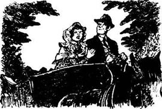
“是啊，”托尼说，“是啊，你说得一点儿不错。”
“而且——你能说我不漂亮吗，托尼？”
他望着她好一会儿。“我实在不能那么说，”他说，“不，我觉得你是世上最漂亮的姑娘。”
“就是说我比她漂亮，对吧？”
幸运的是，托尼没等回答，就看见路拐弯处的树篱后面露出一个姑娘的帽子。他看着那帽子很眼熟——那是米利的帽子。
“尤妮蒂，”托尼急忙说，“米利往这边来了。如果她看见你跟我在一起，那我的麻烦就大了。最亲爱的尤妮蒂，我们不想大吵一架或是发生别的什么事情，对吧？所以，你躲到车后面的防水油布底下，好不好？只要等到米利走过去就行了。我会考虑你说的事情，或许还会向你求婚，而不是米利。你知道，我和她的事儿还没定呢。”
于是，尤妮蒂躲到了马车后面的油布底下，而托尼则赶着车迎向米利。
“亲爱的托尼！”等他走近，米利生气地说，“你怎么这么晚才来！”
“晚？”托尼说，“你在等我吗？”
“我当然在等你！”米利说，“你让我来跟你会合，一起坐车回家的。你不记得了？”
“哦，天呐！”托尼说，“是的，是的，我是说过。我现在想起来了。哦，天呐——我是说，上车吧，亲爱的米利！”
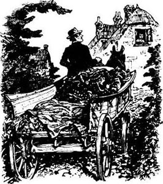
于是米利上了马车，托尼继续赶路。他们东拉西扯地聊天，看着一路上的树和小鸟。这时，他们经过路旁的一座房子，汉娜·乔利沃正从楼上的窗子里望出来。汉娜是个漂亮的高个子姑娘，有一头红色的长发。而且托尼过去跟她好过很长一段时间——在米利和尤妮蒂之前。
“亲爱的米利，”他小声说，因为他不想让尤妮蒂听见，“那个从窗子望出来的姑娘以前想和我结婚。我担心她会大发脾气，因为她知道我要跟你结婚，而且你又比她漂亮。米利，你愿意帮我个忙吗？”
“当然，我最亲爱的托尼。”米利说。
“那你能藏到车前面的空袋子底下吗？就在这儿，座位后面。她现在还没看到我们，你藏起来，我们就不用跟她撕破脸了。”
“好吧，如果这能帮你的话，托尼。”米利说。她其实并不想这么做，但还是藏到了座位后面的袋子底下。这样一来，马车前面藏着米利，马车后面躲着尤妮蒂。
托尼赶着车经过那座房子，那是汉娜叔叔的家。这时，汉娜从窗子望下来，向他大声喊道：“你不打算邀请我跟你一起坐车回家吗？”
“哦——是的，当然！”托尼不知道说什么才好，“你不打算住在你叔叔家吗？”
“不，”汉娜说，“你没见我已经穿好外衣，戴好帽子了吗？你怎么这么蠢，托尼？”
“嗯，是啊，嗯，那你当然得跟我一起坐车回家。”托尼说着，开始有点儿紧张和不自在了。他停下马车，等汉娜下楼，上车坐到他旁边。
托尼又赶车上路，汉娜从眼角瞅了瞅他。“这真不错，对吧，托尼？”她说，“我喜欢和你一起坐马车。”
托尼回头望着她的眼睛。过了一会儿，他说：“我也喜欢和你一起坐马车。”接着，他又看着她的眼睛——这是一段长久而深情的注视。他开始越来越喜欢她。到后来，他已经不记得自己当初怎么会想跟米利或尤妮蒂结婚了。他朝汉娜身边靠了靠，两个人轻声耳语起来。过了一会儿，托尼说：“啊，我可爱的汉娜！”说着握住了她的手。
“你要跟米利结婚了，我很难过，”汉娜说，“因为我真的很喜欢你，亲爱的托尼。”
托尼很快地看了一眼身后。“我还没向她求婚呢，”他小声说，“而且我也不确定我会那么做。我现在想向你求婚。”
“哦！离开米利吧，和我结婚！”汉娜大声说，“哦，这真太好了！”
这话刚一出口，座位后面就传出了生气的叫声，车后面的防水油布也动了动。
汉娜回头瞧了瞧。“那儿有东西，托尼！车后面有只什么动物！”
“不，没有，”托尼说，“只有几只空袋子，那声音是轮子发出来的。”
不过他心里清楚自己的麻烦来了，却不知道该如何是好。这时，马车在路上拐了个弯，托尼看到他老爹正在田里。老爹朝他抬了抬手，托尼终于找到了开溜的机会。
“哦，汉娜，”他说，“你能帮我拿一会儿缰绳吗？我去看看老爹有什么事。”
汉娜答应了，于是托尼急忙跑进了田里。
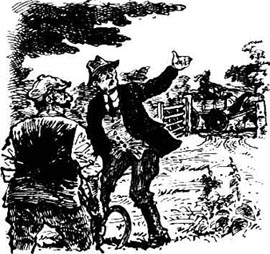
“你在玩什么把戏，托尼？”老凯茨先生问。
“您这是什么意思，爸爸？”
“哦，如果你要娶米利·理查兹，那就快跟她结婚。但是别跟乔利沃的女儿坐着马车到处晃。人们会说闲话的。你可不能这么做，孩子。”
“米利也在那儿，爸爸。”
“米利？在哪儿？”
“在袋子下面！是的，还有尤妮蒂·萨勒特，爸爸，她在马车另一头的防水油布底下。她们三个都在马车上，我不知道怎么办才好！我该跟谁结婚呢，爸爸？”
“她们中哪一个没有要求搭你的车？”
“米利没有，因为是我邀请她的。”
“那就跟米利结婚，她是最好的一个——嘿，瞧！”
托尼回头，看见他的马车在走。他赶快穿过田地飞快地朝马车跑去。
马车上是怎么回事？是袋子下面的米利惊叫了一声。她开始四处挪动，看到了另一个女人的脚，于是顺着防水油布发现了尤妮蒂。
“你在这儿干吗？”她生气地问。
“我还要问你呢。”尤妮蒂说。
“我和他订了婚，而且我可以——”
“哦，不，你没有，”尤妮蒂说，“他要娶的是汉娜，不是你。他刚才说的——我们都听见了。”
这时，汉娜听到了防水油布下面有人说话，于是忘了看马，回头来看是怎么回事。那匹马决定自己回家，突然快跑起来。马车的轮子驶上了田地的斜坡，车子翻了，三个姑娘都跌到了路上。那匹马四下看了看，站住不动了。
虽然没有人受伤，可是等托尼跑过来的时候，三个姑娘已经又哭又叫地闹成了一团。
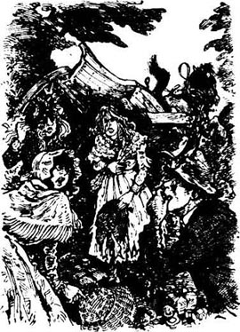
“哦，别发火，亲爱的姑娘们！请别这样！”托尼说。她们还是不停地又哭又叫，所以他只好提高了声音。“我得说话算话，”他说，“我向汉娜求婚，而她也答应了——”
“哦，不，我没答应！”汉娜说，她现在真的气坏了，“你以为我是傻瓜！我才不会跟在马车后面藏姑娘的男人结婚呢！”
托尼看起来很惊讶。“那你不想跟我结婚了，汉娜？”他说。
“决不！”汉娜说完，头也不回地走了。可能她确实还想跟他结婚，但她不想在另外两个姑娘面前向他低头。
托尼不知道接下去该说什么。米利一个劲儿地哭，而托尼的老爹认为她是最适合他的一个。但你怎么会乖乖听老爹的话呢？所以，托尼转向了尤妮蒂。
“好吧，你愿意和我结婚吗，亲爱的尤妮蒂？”他问。
“和一个汉娜·乔利沃不想要的人结婚？我才不呢！”尤妮蒂说完，也走了。
现在就剩下了米利和托尼。米利还在哭，托尼站在那里看着她。
“好了，事情就是这样了，”他最后说，“现在就剩了我们两个。我们结婚吧，好不好，米利？”
“如果你愿意，托尼。你跟她们说那些话不是认真的吧？”
“当然不是！”托尼说。他吻了吻她，又把马车弄回到大路上，一起坐车回家了。他们下个星期日去见了牧师，两个星期后就结婚了。
* * *
故事讲完了，车夫扭头跟邮局女局长说：“他们的婚礼很不错，是不是，维德尔太太？你也去参加了吧？”
“哦，是的，”邮局女局长说，“好多年没有过那么棒的婚礼了。我以前可参加过不少婚礼。我们这儿也有几次奇怪的婚礼。你还记得几年前安德鲁·撒切尔和简·瓦伦斯的婚礼吗？”
“可他们是在别的村子举行的婚礼，”教堂执事急忙说，“不是在长池村的教堂。”
车夫笑起来。“没关系的，弗拉克斯顿先生。我们知道那不关你的事。继续，维德尔太太，给我们的客人说说安德鲁和简的事儿吧。”
“是啊，我记得撒切尔一家，”约翰·拉克兰的儿子说，“我想听听这个故事。”
于是邮局女局长开始讲起来。
Andrew, Jane, the Parson, and the Fox
Andrew, Jane, the Parson, and the Fox
It all happened because Andrew Satchel liked his drink too much. Jane Vallens, his bride, was some years older than him, and was in a great hurry to get married. Andrew agreed to marry her because of the baby, but he didn't really want to get married, and Jane, poor thing, was afraid of losing him. She was very anxious to get him to church as soon as possible.
So she was very happy, early on a fine November morning, when she and Andrew walked to the church just outside her village. Andrew's brother and sister went with them, to be their witnesses. After the wedding Andrew and Jane planned to go down to Port Bredy and spend the day there, as a little holiday.
When Andrew left Longpuddle that morning, to walk to his bride's village, people said that he was walking all over the road, first one side, then the other. The night before, you see, he was at his neighbour's house, for a party to welcome a new baby. It was a good party, and Andrew had no sleep, and a lot of strong drink.
He got to the church with Jane, they walked inside, and the parson looked at Andrew very hard.
'What's this? You're drunk, my man! And so early in the morning, too! That's disgraceful!'
'Well, that's true, sir,' said Andrew. 'But I can stand, and I can walk. Better than a lot of people. You couldn't stand and walk after a party at Tom Forrest's house, could you, Parson? No, you couldn't!'
This answer didn't please Parson Billy Toogood a bit. He was strong on church business inside the church, but he was very different outside the church, I can tell you.
'I cannot marry you when you are drunk, and I will not!' he said. 'Go home and get sober!'
Then the bride began to cry. 'Oh Parson, please marry us, please!'
'No, I won't,' said Mr Toogood. 'I won't marry you to a man who is drunk. It's not right. I'm sorry for you, young woman, because I can see that you need to get married, but you must go home. How could you bring him here drunk like this?'
'But if he doesn't come drunk, he won't come at all, sir!' said Jane, still crying hard.
But Parson Toogood still said no.
'Well, sir,' said Jane, 'please will you go home and leave us here for two hours? When you come back, Andrew will be sober. But I want to stay here, because if Andrew goes out of this church unmarried, wild horses won't get him back here again!'
'Very well,' said Parson Toogood. 'I'll give you two hours, and then I'll come back.'
Andrew's brother and sister didn't want to wait all that time, so the church clerk sent them home. 'We'll find some other people to be witnesses,' he said.
Then the bride whispered in the parson's ear. 'Please, sir, will you lock the door — and not tell anyone we are here? And perhaps it will be better if you put us in the church tower. If we stay here in the church, people can look in the windows and see us and talk about it. And perhaps Andrew will try to get out and leave me!'
'All right,' said the parson. 'We'll lock you in.'
Then he and the church clerk went home, the parson into his house, and the clerk into the garden. The clerk worked for the parson, you see — in the garden, taking care of his horses, and that kind of thing. And both of them, parson and clerk, dearly loved following the hunt.
Well, on that day the hunt was meeting near the parson's village, and soon both the parson and the clerk could hear the noise of the horses, and the dogs, and everything. The clerk hurried into the house.
'Sir,' he said. 'The hunt's here, and your horses need a run very badly, sir. They haven't been out for days!'
'You're right,' said Parson Toogood. 'Yes, the horses must go out. Go and get them ready! We'll take them out, just for an hour, and then come back.'
So the clerk got the horses ready, and he and the parson rode off to find the hunt. When they got there, the parson found a lot of friends, and soon they were all talking and laughing together. Then the dogs found a fox, and away they all went — the huntsmen in their red coats, the squire from the big house with his friends, the farmers and their sons, and the parson and the clerk.
He was a great hunting man, was Parson Toogood. He forgot all about the unmarried man and woman locked in his church tower, and so did the clerk.
Across the fields they rode, over the hedges, through the rivers, in and out of woods, up and down the hills. It was a fine, exciting run that day, and the parson and the clerk enjoyed themselves very much. At one time the fox turned back, and ran right under the nose of Parson Toogood's horse.
'Halloo! Halloo!' shouted the parson. 'There he goes!' and away they all went again.
At last, late in the day, the hunt came to an end. The parson and the clerk were a long way from home, and their horses were tired. They rode home very slowly.
'Oh dear, my back does hurt!' said Parson Toogood.
'I can't keep my eyes open,' said the clerk. 'I'm so tired!'
It was dark when they got home. They made the horses comfortable, ate something, and fell into bed themselves.
The next morning, when Parson Toogood was having breakfast, the clerk came running in through the door.
'Oh sir!' he cried. 'Those two in the church tower — we forgot all about them! They'll still be there!'
Parson Toogood jumped up from his chair. 'Oh dear!' he said. 'Oh dear, oh dear! This is disgraceful!'
'It is, sir; very. And that poor woman...'
'Don't say it, clerk! If she's had the baby, and no doctor or nurse with her...Come on!'
So they both ran round to the church, looked up at the tower, and saw a little white face looking down at them. It was the bride.
'They're still there,' said the parson. He turned his face away. 'Oh dear, oh dear! What am I going to say to them? Is she all right, clerk? Can you see?'
'I don't know, sir. I can't see lower than her neck.'
'Well, how does her face look?'
'White, sir. Very, very white.'
'Well, we must go in and see them. Oh dear, oh dear! And my back still hurts from that ride yesterday!'
They went into the church and unlocked the tower door, and at once poor Jane and Andrew jumped out like hungry cats from a cupboard. Andrew was very sober now, and his bride was white in the face, but all right in other ways.
'Thank God for that!' said Parson Toogood. 'But why didn't you try to escape? Why didn't you shout from the top of the tower, to get help?'
'She didn't want me to,' said Andrew.
Jane began to cry again. 'It was the disgrace of it,' she said. 'We thought people would talk about it and laugh at us all our lives. So we waited and waited and waited — but you never came back, parson!'
'Yes, I'm sorry about that,' said Parson Toogood. 'Very sorry. But now, let's get on with the wedding.'
'I'd like something to eat first,' said Andrew. 'Just a piece of bread. I'm so hungry — I could eat a horse!'
'Oh, let's get married first,' said the bride anxiously, 'while the parson's still here. It won't take a minute.'
'Oh, all right,' said Andrew.
The clerk was one witness, and he called in a second witness (telling him not to talk about it). Very soon Andrew and Jane were husband and wife.
'Now,' said Parson Toogood, 'you two must come back to my house and eat a good meal.'
So they went back with the parson, and ate nearly every bit of food in his house.
They kept the secret for a while, but then the story got out, and everybody knew about their night in the church tower. Even Andrew and Jane laugh about it now. Andrew isn't much of a husband, it's true, but Jane got a ring on her finger and a name for her baby.
* * *
The carrier laughs loudly at the end of the postmistress's story. 'Did you know Andrew's uncle?' he asks John Lackland's son. 'He played in the church band.'
'The church band!' says Mr Lackland. 'Are they still playing their fiddles in the church every Sunday?'
'No,' I says Mr Profitt, the schoolteacher. 'They haven't played for twenty years or more. There's an organ in the church now. The young man who plays it is very good, but most people liked the fiddles better. Yes, everybody in Longpuddle was sorry when the church band stopped playing.'
'But why did they stop,' says John Lackland's son, 'if everybody liked them?'
And this is what the schoolteacher tells him.
anxious adj. uneasy and apprehensive about an uncertain event or matter; worried 焦虑的，担心的
witness n. one who can give a firsthand account of something seen, heard, or experienced 见证人
strong drink a drink containing a considerable percentage of alcohol 烈酒
drunk adj. intoxicated with alcoholic liquor to the point of impairment of physical and mental faculties 醉的
disgraceful adj. bringing or warranting disgrace; shameful 可耻的
sober adj. not drunk 清醒的
hunt n. a hunting expedition or outing, usually with horses and hounds 狩猎旅行
squire n. an English country gentleman, especially the chief landowner in a district 英国乡绅
hurt v. to have or produce a feeling of physical pain or discomfort 疼痛，不适
cupboard n. a closet or cabinet, usually with shelves for storing food, crockery, and utensils 碗橱
meal n. an amount of food eaten at one time, usu. consisting of two or more dishes 一餐
fiddle n. a violin 小提琴
organ n. an instrument consisting of a number of pipes that sound tones when supplied with air and a keyboard that operates a mechanism controlling the flow of air to the pipes 风琴
安德鲁、简、牧师和狐狸
安德鲁、简、牧师和狐狸
这一切都是因为安德鲁·撒切尔太好酒。他的新娘简·瓦伦斯比他大几岁，急着结婚。安德鲁是因为没出生的孩子，才不得不答应结婚的，其实他根本不想讨老婆，而可怜的简很害怕失去他。她一心想着赶快把他弄进教堂。
所以，在一个天气很好的11月的早上，当她和安德鲁一起走向村外的教堂时，她非常开心。安德鲁的哥哥和姐姐跟他们一起去，为他们当见证人。婚礼之后，安德鲁和简打算去布莱迪港待上一天，算是次小小的度假。
那天早上，安德鲁离开长池村往新娘的村子走的时候，人们说他在路上晃晃悠悠的，一会儿走在路这边，一会儿又晃到路那边。你知道，前一天晚上，他在邻居家里参加了一个新生儿的庆祝会。那真是个不错的聚会，安德鲁一夜没睡，而且灌了不少烈酒。
他和简一起来到教堂，走了进去，被牧师狠狠地瞪了一眼。
“怎么回事？你喝醉了，伙计！而且是在一大早！这真丢人！”
“哦，没错，先生，”安德鲁说，“但我还能好好地站着，也能走路。我比好多人都强多了。你从汤姆·弗罗斯特家的聚会里出来肯定既站不住也走不了，你能吗，牧师？不，你不能！”
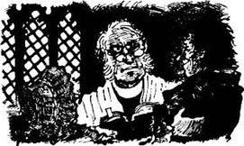
比利·图古德牧师可一点儿也不喜欢这回答。他觉得在教堂里就应该有在教堂的样子，不过我可以告诉你，他在别的地方可根本不管那套。
“我不能在你醉醺醺的时候给你们举行婚礼，我绝不会那样做！”他说，“回家去清醒一下吧！”
这时，新娘哭了起来：“哦，牧师，请给我们举行婚礼吧，求你了！”
“不，我不会那样做，”图古德先生说，“我不会主持婚礼让你嫁个醉鬼。那是不对的。我为你感到难过，姑娘，我看得出你很需要这场婚礼，但你们必须回家去。他醉成这样，你怎么能把他带到这儿来？”
“可是如果他没喝醉的话，他根本就不会来的，先生！”简说着，哭得更厉害了。
可是图古德牧师还是不肯点头。
“好吧，先生，”简说，“你能先回家去，把我们留在这儿待两个小时吗？等你回来，安德鲁就清醒了。我想待在这里，因为如果安德鲁出了教堂却没结婚的话，就算九匹马也没法把他再拉回来了！”
“好吧，”图古德牧师说，“我就给你们两个小时，到时候我再回来。”
安德鲁的哥哥和姐姐不想等那么久，于是教堂执事就让他们回家了。“我们会找些别的人来当见证人的。”他说。
这时，新娘凑到牧师耳边小声说：“先生，你能把门锁上——而且别告诉任何人我们在这儿吗？或许你把我们锁在教堂塔楼上更好。如果我们就这么待在教堂里，人们会从窗子看到我们，然后说闲话的。而且安德鲁也可能会想溜出去，把我抛下！”
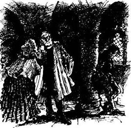
“好吧，”牧师说，“我们就把你们锁在塔楼上好了。”
一切办好之后，他和教堂执事就回家了。牧师回到自己的房子，教堂执事则进了花园。你知道，教堂执事是给牧师干活儿的——帮他照顾花园和马匹，还有类似的活计。而且牧师和教堂执事都特别喜欢跟狩猎旅行的队伍凑热闹。
哎呀，那天正好有一群参加狩猎旅行的人在牧师的村子旁边会合，不一会儿牧师和教堂执事就听到马蹄声和猎狗的叫声，还有熙熙攘攘的人声。教堂执事赶忙冲进了屋子。
“先生，”他说，“参加狩猎旅行的人到这里了，你的马也实在该好好遛一下了，先生。它们已经几天没出门了！”
“你说得对，”图古德先生说，“没错，马是得出去遛遛了。去准备好马！我们带它们出去，就一个小时，然后就回来。”
于是教堂执事把马备好，和牧师一起骑马去寻找狩猎旅行的队伍。他们到了那里，牧师见到了不少朋友，大家立刻热热闹闹地说笑起来。这时，猎狗发现了一只狐狸，所有人都赶了过去——穿红上衣的猎人，大宅里的乡绅和他的朋友们，农夫们和他们的儿子，还有牧师和教堂执事。
图古德牧师是个相当不错的猎人。他和教堂执事很快就把锁在教堂塔楼上还没完成婚礼的那对男女忘得一干二净。
他们骑马穿过田野，越过树篱，趟过小河，经过了一片片树林，翻过了一座座山丘。这一趟跑下来真是开怀又尽兴，牧师和教堂执事都玩得非常愉快。有一次，那只狐狸突然转头往回跑，就从图古德牧师的马前窜了过去。
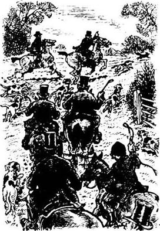
“喂！喂！”牧师喊起来，“它往那儿跑了！”于是一群人调头又追过去。
天色将晚，狩猎旅行终于结束了。牧师和教堂执事这时已经离家很远了，而且马也筋疲力尽了。他们只好慢慢地骑马往回走。
“哦，天呐，我的背真疼！”图古德牧师说。
“我的眼睛都快睁不开了，”教堂执事说，“我好累啊！”
他们天黑才到家，把马匹安顿好，吃了点儿东西以后；就倒在床上睡了。
第二天早上，图古德牧师正在吃早饭，教堂执事慌慌张张地从门口跑进来。
“哦，先生！”他叫道，“教堂塔楼里那两个人——我们把他们全都忘了！他们肯定还在那儿呢！”
图古德牧师一下子从椅子上跳了起来。“哦，天呐！”他说，“哦，天呐！哦，天呐！这太丢人了！”
“没错，先生，太丢人了。而且那可怜的女人……”
“别说了，执事！如果她把孩子生了下来，而且又没有医生和护士在旁边……快来！”
他们匆匆忙忙地跑到教堂，朝塔楼上望去，看到一张苍白的小脸正向下看着他们，是那个新娘。
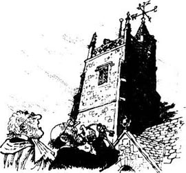
“他们还在那儿，”牧师说着把脸转到了一边，“哦，天呐！哦，天呐！我要怎么跟他们说啊？她还好吧，执事？你能看见吗？”
“我不知道，先生。我只能看见她脖子以上的部分。”
“那她的脸看起来怎么样？”
“很白，先生，苍白极了。”
“好吧，我们必须进去看看他们。哦，天呐！哦，天呐！昨天骑马弄得我的背到现在还疼着呢！”
他们进了教堂，打开了塔楼的门锁。门一开，可怜的简和安德鲁就跳了出来，就像两只被关在碗橱里饿坏了的猫。安德鲁现在已经完全清醒了，而他的新娘除了脸色苍白，其他一切还好。
“感谢上帝！”图古德牧师说，“可你们为什么不想办法出来呢？你们干吗不在塔顶上喊人来帮忙？”
“她不想让我喊人来。”安德鲁说。
简又开始哭了起来。“那样太丢人了，”她说，“我们觉得别人会说闲话，拿这当笑柄笑话我们一辈子，所以我们就一直等啊等——可你却没来，牧师！”
“是的，我为这件事感到抱歉，”图古德牧师说，“非常抱歉。不过，现在让我们继续举行婚礼吧。”
“我想先吃点儿东西，”安德鲁说，“一块面包也好。我都饿扁了——饿得能吞下一匹马！”
“哦，让我们先结婚吧，”新娘担心地说，“趁牧师还在这里。用不了多久的。”
“哦，好吧。”安德鲁说。
教堂执事算是一位见证人，他又叫来了另一个见证人（还嘱咐那人别把这件事说出去）。很快，安德鲁和简就成了合法夫妻。
“好了，”图古德牧师说，“现在你们两位一定得到我家去好好吃上一顿。”
于是，他们跟牧师回去，把他家里能吃的东西几乎一扫而空。
他们的秘密保守了一段时间，但最后还是传了出去，现在人人都知道他们被关在教堂塔楼上过了一夜的事。如今，安德鲁和简也把这件事当成了笑话讲。安德鲁算不上一个好丈夫，但是简毕竟为自己弄到了一枚戒指，为她的孩子弄到了一个姓氏。
* * *
邮局女局长的故事讲完了，车夫大声笑起来。“你认识安德鲁的叔叔吗？”他问约翰·拉克兰的儿子。，“他在教堂的乐队里拉琴。”
“教堂的乐队！”拉克兰先生说，“他们每个星期天还在教堂里拉小提琴吗？”
“不，”学校教师普罗菲特先生说，“他们有二十多年没在教堂里拉琴了。现在教堂里有一架风琴。弹风琴的年轻人很不错，不过大多数人还是更喜欢以前的小提琴。是的，教堂的乐队不再拉琴以后，整个长池村的人都觉得很遗憾。”
“可如果大家都喜欢他们，他们为什么不拉琴了呢？”约翰·拉克兰的儿子问。
于是学校教师给他讲了这段故事。
The Church Band
The Church Band
It was on the Sunday after Christmas. That was the last time the band played in Longpuddle church, but they didn't know it at the time, of course.
They were a very good band, the best of all the villages around. There was Nicholas Puddingcome, who played the first fiddle. There was Timothy Thomas and John Biles on the other fiddles; and Dan Hornhead and Robert Dowdle played the oboes.
They didn't just play church music; they could play all kinds of dance music too. They often went out to play at dancing parties in people's homes or in the village inn. So one night they were in the squire's big house, playing nice Christmas songs, and drinking tea with all the squire's fine friends. And the next night they were down at the Dog and Fox, playing noisy dance music for twenty dancers, and drinking hot brandy-and-water.
Well, that Christmas week was a busy time for them. They were out at dance parties every night, and got very little sleep. Then came the Sunday after Christmas. It was cold that winter — oh my word, it was cold! And upstairs in the church gallery, it was even colder.
So when the band was playing on that Sunday morning, Nicholas Puddingcome said to the others:
'I can't feel my fingers, it's so cold. How can a man play the fiddle when he can't feel his fingers? This afternoon we'll have something to make us warm.'
So he brought a big jar of hot brandy-and-water to church in the afternoon. They put the jar inside Timothy Thomas's fiddle bag, which kept it nice and warm. And during that long afternoon in church, they all had a little glass now and then, so when the parson began his sermon, they were all feeling comfortable and warm. Unluckily for them, the sermon that day was a long one, and the parson went on and on and on. And every man in the band fell asleep, and they slept like babies all through the sermon.
It was a very dark afternoon, and by the end of the sermon you couldn't see very much inside the church. When the parson finished, he called for the last piece of music. But the band did not start playing, and people began to turn round and look up at the gallery. Then Levi Limpet, a boy who sat in the gallery, whispered to Nicholas, 'Begin! Begin!'
'Hey? What?' said Nicholas, and nearly fell out of his chair.
Then, because the church was dark and he was still half-asleep, he thought that he was at a party. The night before, you see, the band was playing all night at a party at the Dog and Fox, and Nicholas thought he was still there! So he took his fiddle and immediately began to play The Laughing Sailor — that was the favourite dance tune in our village that winter.
The rest of the band woke up suddenly, and hearing The Laughing Sailor, of course they just followed Nicholas. And away they all went, fiddles and oboes, as loudly as they could. They played that dance tune until the church walls shook with the sound.
Then Nicholas saw that nobody was moving. If people didn't know the dances, he often called out the moves to help them. And so he did that now.
'Up to the top, change hands, then back down the other side!' he shouted. 'Then turn around, once, twice, take hands, and back to the top again!'
The boy Levi was very frightened. He ran down the gallery stairs and out of the church as fast as his little legs could carry him. The parson's hair stood on end when he heard that wicked dance tune in his church. He held up his hand and cried, 'Stop, stop, stop! Stop, stop!'
But the band didn't hear him because of the noise of the music. The parson went on calling 'Stop, stop!' and the band went on playing.
Then people in the church began to stand up and talk. 'What's happening? Why are they playing this wicked music? Is it the Devil himself up there in the gallery?'
And the squire, too, stood up. He was there with all his fine friends, and he was very angry. He went and stood in front of the gallery, and shouted at the band.
'Stop this wicked noise! At once! D'you hear?'
The squire had a good, loud voice, and at last the band heard him, and stopped playing.
'Playing the Devil's music in church — in God's house!' said the squire. 'I have never heard anything so disgraceful in all my life — never!' Oh, he was so angry!
The parson came down and stood beside the squire. 'Never!' he said. 'Never!'
'The Devil is in you men!' said the squire. (He was a wicked man himself, the squire was, but that day he was all on God's side, of course.) 'And you will never,' the squire went on, 'never, never play your fiddles in this church again! You have done a wicked thing today, and it must never happen again.'
By now the unhappy players knew that they were in church, and not in the Dog and Fox. They put their fiddles and their oboes under their arms, and very quietly they went down the gallery stairs and out of the back door of the church.
The parson was a kind man, and when he heard the true story later, he wasn't angry any more. He knew that Nicholas, Timothy and the rest weren't wicked men. But the squire — that was a different matter. He was a hard man, and when he said 'no more fiddles', he meant 'no more fiddles'. He sent away for an organ, and the next week, there it was in the church. He found a young man from a good family to play it, and the old band played no more in Longpuddle church.
* * *
After this story John Lackland's son asks about the young women of the village. 'Or those who were young when I left, all those years ago,' he says. 'They're all married now, I'm sure.'
'Let's see,' says the carrier. 'Do you remember Netty Sargent, sir?'
'Netty Sargent...Yes, I do. When I left, she was living with her uncle, wasn't she?'
'That's right. She was a bright young thing, Netty was. Nothing bad about her, you understand, just a little bit clever. She was very clever about the leasehold of her house, I remember.' The carrier looks round at his passengers. 'Who'll tell Mr Lackland that story, then?'
'My wife knew Netty when they were girls,' says the farmer, Mr Pawle. 'She can tell you.'
Nancy Pawle is a big, comfortable-looking woman. She laughs, and says, 'Oh yes, I can tell you all about Netty Sargent.'
oboe n. a musical instrument of the woodwind family, with a double reed, played by blowing 双簧管
inn n. a small pub or hotel, especially one in the countryside 小旅馆
gallery n. an upper level in a building such as a church 教堂里的楼上
sermon n. a religious discourse delivered as part of a church service 布道
frightened adj. full of fear 恐惧的
wicked adj. evil by nature and in practice 邪恶的
leasehold n. the fact or condition of holding property by lease 租借
教堂乐队
教堂乐队
那是圣诞节之后的第一个星期天，也是那个乐队在长池村教堂的最后一次演奏。当然，那时候他们没料到事情会变成这样。
他们是个非常不错的乐队，在周围的几个村子里是最好的。尼古拉斯·帕丁康姆是第一小提琴，蒂莫西·托马斯和约翰·拜尔斯也拉小提琴，丹·霍恩海德和罗伯特·多德尔吹双簧管。
他们不光演奏教堂音乐，还会演奏各种各样的舞曲。他们常常到人们家里或村里的旅馆为舞会伴奏。头一天晚上，他们可能在乡绅的大宅子里演奏优美的圣诞乐曲，跟乡绅的贵客们一起喝茶。第二天晚上，他们可能又会在“猎狗和狐狸”旅馆演奏闹哄哄的舞曲，为20个跳舞的人伴奏，喝热的加水白兰地。
唉，圣诞节那个星期可真够他们忙活的，天天晚上有舞会，根本睡不了多少觉，就这样到了圣诞节后的那个星期天。那年冬天特别冷——老天，真是冷极了！而且教堂楼上乐队待的地方就更冷了。
所以，那个星期天早上乐队在教堂演奏的时候，尼古拉斯·帕丁康姆跟其他人说道：
“天太冷了，我的手指都被冻麻了。手麻了还怎么拉琴？今天下午我们得喝点儿东西，让身上暖和起来。”
于是，他下午带了一大罐热的加水白兰地去教堂。他们把罐子藏在蒂莫西·托马斯的琴袋里，好让酒一直暖着。那个漫长的下午，他们在教堂里待着，不时喝上一小杯，所以当牧师开始布道的时候，他们各个都觉得身上又暖和又舒服。不幸的是，那天的布道格外长，牧师一讲起来就没完没了。乐队的几个人全都睡着了，一直到布道结束还没醒。
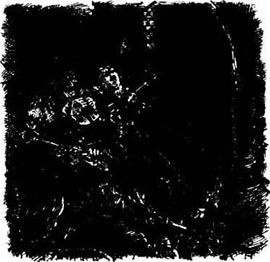
那天下午天色很暗，布道结束的时候，教堂里已经看不太清楚了。牧师讲完了，宣布唱最后一首赞美诗，可乐队却没有动静，人们纷纷回头往楼上看。这时，一个坐在楼上的男孩，利瓦伊·林皮特悄悄对尼古拉斯说：“开始了！开始了！”
“啊？什么？”尼古拉斯差点儿从椅子上摔下来。
接着，因为教堂里很暗，半睡半醒之间，他以为自己是在舞会上。你知道，前一天晚上他们在“猎狗和狐狸”旅馆演奏了一整夜，而尼古拉斯以为自己还在那里！于是他拿起小提琴，立刻拉起了《大笑的水手》——这是那年冬天我们村里最受欢迎的舞曲。
乐队的其他人也突然醒过来，听到《大笑的水手》，自然也都跟着尼古拉斯演奏起来。他们就这么又吹又拉，而且还鼓足了劲儿，要多响有多响。热闹的舞曲把教堂的墙都震得直晃。
后来尼古拉斯才发现没有人动。如果人们对一种舞不太熟，他常常帮他们喊动作，现在他就这么做了。
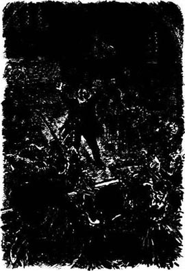
“走到尽头，换手，再走到另一边！”他大声喊着，“然后转圈，一圈，两圈，拉手，再回到尽头！”
那个男孩利瓦伊吓坏了。他跑下楼梯，冲出教堂，一溜烟地不见了。牧师气得头发都竖起来了，他居然在自己的教堂里听到了这首邪恶的舞曲。他举起手来大喊：“停下，停下，停下！停下，停下！”
可是音乐的声音太大，乐队根本没听见他说话。牧师不停地喊“停下，停下！”，而乐队一刻也没停。
教堂里的人开始站起来议论纷纷：“出了什么事？他们为什么演奏这首邪恶的曲子？难道魔鬼本人就在楼上?”
乡绅也站了起来，他的贵客们也全在场，这让他非常生气。他冲到乐队对面，向楼上大声喊起来：
“停下这邪恶的噪音！马上停下！你们听见了吗？”
乡绅的嗓门很大，乐队这次总算听见了，停止了演奏。
“竟然在教堂里——在上帝的房子里演奏魔鬼的曲子！”乡绅说，“我这辈子还没听过这么丢人的曲子呢——从来没有！”哦，他气得直冒烟！
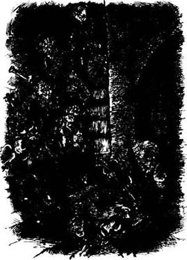
牧师也走下讲坛，站在乡绅旁边。“从来没听过，”他附和着，“从来没有！”
“你们被魔鬼附身了！”乡绅说。（乡绅其实不是个好东西，但那天他当然是站在上帝一边的。）“你们永远，”乡绅继续说道，“永远，永远都别想再在这个教堂拉琴了！你们今天做了一件邪恶的事，这种事再也不能发生了。”
到这会儿，可怜的乐队才明白自己原来是在教堂，而不是“猎狗和狐狸”旅馆。他们夹着提琴和双簧管悄悄地下楼，从教堂后门溜走了。
牧师是个好人，后来听说了这件事的实情就不再生气了。他知道尼古拉斯、蒂莫西和另外几个人都不是坏人，但这在乡绅眼里就不是那么回事了。他是个冷酷又固执的人，只要说了“不准拉琴”，那就是“不准拉琴”，根本没商量。他派人买来了风琴，下一个星期就送到了教堂。他还找了个出身很好的年轻人来弹琴，原来的乐队再也没有在长池村的教堂里演奏过。
* * *
听完这个故事，约翰·拉克兰的儿子又问起了村里的年轻姑娘们。“或者说那些在我多年前离家时还年轻的姑娘们，”他说，“她们现在肯定都结婚了。”
“让我想想，”车夫说，“你还记得妮蒂·萨金特吗，先生？”
“妮蒂·萨金特……是的，我记得。我离开时，她和她叔叔住在一起，是吧？”
“没错。妮蒂是个聪明的小东西。你明白的，她不坏，就是有点儿小聪明。我记得她在房子租约那件事上做得就很聪明。”车夫扫视了一下他的乘客们，“谁来给拉克兰先生讲讲那件事？”
“我太太年轻的时候跟妮蒂很熟，”农夫波尔先生说，“她可以告诉你。”
南希·波尔是个高大、富态的女人。她笑着说：“哦，是的，我可以告诉你妮蒂·萨金特的一切。”
Netty Sargent and the House
Netty Sargent and the House
Netty Sargent lived with her uncle in that lonely house just outside the grounds of the squire's big house. She was a tall young woman, with black hair and dancing eyes. And she had a little laughing smile that sent all the young men wild.
All the young men of that time were after her, but in the end she decided that Jasper Cliff was her favourite. He was good-looking, but he only ever thought about himself, not other people. But Netty wanted Jasper, and none of the others. Jasper liked Netty too, but he was more interested in her uncle's house.
The house was built by Netty's great-great-grandfather, and had a garden and a little field next to it. But it was a leasehold house, because the ground belonged to the squire.
'And what happens,' Jasper asked Netty one day, 'when your uncle dies?'
'The house, garden and field will go back to the squire,' said Netty. 'But if Uncle pays a few pounds, he can renew the leasehold and put another name on it. Then the squire can't get the house back until that person dies.'
'And what is your uncle going to do?' asked Jasper.
'Oh, he's going to renew the leasehold, and put my name on it. He told me that months ago.'
Netty's uncle knew that it was important to renew the leasehold, because the squire was very anxious to get the house back. The squire didn't like all those little leaseholds on his ground, and he wanted to pull the house down and make it all nice and tidy.
Netty's uncle knew this very well — but he still didn't renew the leasehold. He didn't like Jasper Cliff, so perhaps he didn't like to think of Jasper marrying Netty and living in the house when he was dead.
Every week Jasper asked Netty about the leasehold, and Netty asked her uncle, and her uncle said, 'I'll go and see the squire's agent next week.' But still nothing happened.
At last old Mr Sargent fell ill, and Jasper got tired of waiting. 'Why doesn't your uncle do it?' he asked Netty. 'I tell you, if you lose the house and ground, I won't marry you. And there's an end of it.'
Poor Nerty hurried indoors to talk to her uncle.
'Please do something, Uncle!' she said. 'If I don't get the house, I won't get a husband!'
'And you must have Jasper, must you, my dear?'
'Yes, Uncle, I must!'
Old Sargent didn't want to make Netty unhappy, so he asked for a meeting with the squire's agent. The squire was very cross when he heard this. He was hoping that old Sargent would die and the leasehold would come to an end. But he had to agree to renew the leasehold if Sargent paid the money. So the squire's agent got the new papers ready for old Sargent to sign.
By now Netty's uncle was really ill, and couldn't leave the house. The agent agreed to visit him. 'I'll come at five o'clock on Monday,' he told Netty, 'and Mr Sargent can pay the money and sign the papers then.'
At three o'clock on that Monday Netty brought her uncle a cup of tea. When she came in the room, her uncle gave a little cry and fell forward in his chair. Netty ran to him, but he could not speak or move. And in a few minutes, she saw that his face and hands were cold and white. He was dead, stone-cold dead.
Netty was very unhappy. 'Why didn't he live two more hours?' she thought. 'Now I've lost everything — house, garden, field, and a home for myself and my lover. What am I going to do now?'
Then, suddenly, she knew what she had to do. It was a dark December afternoon, which was very helpful for her. First, she locked the front door. Then she moved her uncle's table in front of the fire. Her uncle's body was still in his chair, which was a big old chair on wheels. So she pushed the chair, with her uncle in it, to the table, putting the chair with its back half-turned to the window.
On the table she put the large family Bible open in front of him, and put his finger on the page. Then she opened his eyes a little, and put his glasses on his nose. When it got dark, she lit a candle and put it on the table beside the Bible. Then she unlocked the door, and sat down to wait.
When she heard the agent's knock at five o'clock, she hurried to the door.
'I'm sorry, sir,' she whipered, 'Uncle's so ill tonight. I'm afraid he can't see you.'
The agent was not very pleased. 'So I've come out all this way for nothing, have I?'
'Oh, no, sir, I hope not,' said Netty. 'We can do the business about the leasehold, can't we?'
'Of course not. He must pay the money, and sign the leasehold papers in front of me. I have to be a witness.'
Netty looked worried. 'Uncle is so afraid of business things like this. His hands were shaking when I told him that you were coming today.'
'Poor old man — I'm sorry for him,' said the agent. 'But he must sign the papers, and I must be a witness.'
'Yes, I understand that, sir,' said Netty. She thought for a minute. 'You have to see him. But can you still be a witness, sir, if he doesn't see you?'
'How do you mean, girl?' said the agent.
'Come with me a minute,' she said.
She took him into the garden and round to the window. Inside, the agent could see, at the other end of the room, the back and side of the old man's head, and his arm. He could see the glasses on his nose, and the book and the candle on the table.
'He's reading his Bible, sir,' said Netty, in her softest, sweetest voice.
'Yes, I see that,' said the agent. 'But nobody ever sees him in church, do they?'
'No, but he loves his Bible,' said Netty. 'I think he's sleeping a little at the moment, but that's not surprising in an old man, who's so unwell. Now, sir, can you stand here at the window and watch him sign the papers? Then he won't see you, and he won't be worried and unhappy about it all. Can you do that for him, sir?'
'Very well,' said the agent. He took out a cigar, lit it, and began to smoke. 'Have you got the money ready?'
'Yes,' said Netty. 'I'll bring it out.' She hurried inside, and brought out the money. The agent counted it, then gave Netty the leasehold papers.
'Uncle's hand is very shaky now,' she said. 'And he's so sleepy. I don't think he signs his name very well.'
'He doesn't have to have beautiful writing. He just has to sign,' said the agent.
'Can I hold his hand, to help him?'
'Yes, hold his hand, girl — that'll be all right.'
Netty went into the house, and the agent went on smoking his cigar outside the window. He saw Netty put the pen and the papers in front of her uncle, and touch his arm, and speak to him. She showed him where to write his name on the papers, and put the pen in his hand. Then she stood behind him, and held his hand. But the agent could still see a bit of his head, and he saw the old man's hand write his name on the papers.
Then Netty came out and gave the papers to the agent, and the agent signed his name as witness. He gave her the paper signed by the squire, and left.
And the next morning Netty told the neighbours that her uncle was dead in his bed.
So that's how Netty Sargent lost her house and field, and got them back again — with a husband. But Jasper was a mistake as a husband. After a few years he started hitting Netty — not very hard, but it made her angry. Then she told a neighbour about the leasehold business, and the story got around. By then the old squire was dead, and the squire's son got to hear the story. But Netty was a pretty young woman, and the squire's son never did anything about it.
* * *
Soon the carrier's wagon came down the hill into Longpuddle, and everybody got out and went home. John Lackland's son went to find a room at the Dog and Fox. He stayed in Longpuddle for a few days, walking around, looking at things, and talking to people. Then he left, and no one saw him again.
'Where did he go?' the schoolteacher asked Mrs Weedle in the post office one day.
'I don't know,' said Mrs Weedle. 'He didn't tell anyone. He just went.'
'Why did he come back to Longpuddle, do you think?'
'He said he just wanted to see the place where he was a child. But perhaps he came back to get a wife, and couldn't find one. Who knows?'
lonely adj. without companions; lone 单独的
dancing adj. flashing or twinkling 闪亮的
renew v. to arrange to extend the loan of 续租
tidy adj. orderly and neat in appearance 整洁的
agent n. one empowered to act for or represent another 代理人
sign v. to write (one's name) on (a written paper), esp. for official purposes, to show one's agreement 签字
unwell adj. being in poor health; sick 不舒服的，生病的
cigar n. a compact roll of tobacco leaves prepared for smoking 雪茄
shaky adj. trembling or quivering; tremulous 颤抖的
妮蒂·萨金特和房子
妮蒂·萨金特和房子
妮蒂·萨金特和叔叔一起住在一座孤零零的房子里，紧挨着乡绅大宅的土地。她是个高挑的姑娘，有着一头黑发和一双闪亮的眼睛。她咯咯笑起来的时候能让所有小伙子发疯。
当时所有的小伙子都在追求她，可她最后却看中了贾斯珀·克利夫。他长得不错，但老是只想着他自己，从不顾其他人。可是妮蒂就想要贾斯珀，别人都不行。贾斯珀也挺喜欢妮蒂，不过他对她叔叔的房子更感兴趣。
那房子是妮蒂的爷爷的爷爷建的，旁边还有一个花园和一小块田地，但建房的地是从乡绅那里租来的。
“你叔叔死后那房子会怎样？”有一天贾斯珀问妮蒂。
“房子、花园和田地都会被乡绅收回，”妮蒂说，“不过叔叔只要付几英镑，就可以续租，而且还能把租约转到另一个人名下。这样，在那个人死前，乡绅都不能把房子收回去。”
“那你叔叔打算怎么办？”贾斯珀问。
“哦，他打算续约，在上面换上我的名字。他几个月前就跟我说了。”
妮蒂的叔叔知道续约这件事非常重要，因为乡绅很想把房子收回。他不喜欢自己的地盘上有零碎的小块地被租出去，而且他想把这个房子拆掉，让这周围看起来整齐漂亮。
妮蒂的叔叔非常清楚乡绅的想法——但他还没有续约。他不喜欢贾斯珀·克利夫这个人，所以他大概也不希望自己死后，贾斯珀跟妮蒂结婚一起住到这个房子里。
每个星期贾斯珀都会问妮蒂租约的事，而妮蒂又会去问她叔叔，她叔叔总是说：“我下个星期就去见乡绅的代理人。”可是，一切都还是老样子，什么进展也没有。
最后，老萨金特先生病倒了，而贾斯珀也等得不耐烦了。“你叔叔干吗不去续约？”他问妮蒂，“我告诉你，你如果失去了那房子和田地，我是不会和你结婚的。我们俩的事就这么算了。”
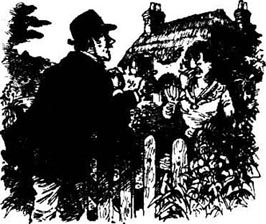
可怜的妮蒂赶紧回到家找她叔叔商量。
“求你做点儿什么吧，叔叔！”她说，“如果我不能得到这房子，就没法结婚了！”
“而你非得跟贾斯珀结婚，是吗，亲爱的孩子？”
“是的，叔叔，我一定要跟他结婚！”
老萨金特不想让妮蒂伤心，于是向乡绅的代理人提出约个时间见面。乡绅听说了这件事非常生气。他原本期望老萨金特就这么死了，好让租约自动解除。但是，如果老萨金特现在付钱，那他就不得不跟他续约。于是，乡绅的代理人拟好了新的租约文件，准备拿给老萨金特签字。
妮蒂的叔叔这个时候已经病得很厉害了，根本没办法出门。代理人同意来见他。“我星期一下午5点过来，”他告诉妮蒂，“到时候萨金特先生可以交钱并且在文件上签字。”
星期一下午3点，妮蒂给她叔叔送茶。她刚进门，她叔叔就发出一声呻吟，垂下头瘫倒在椅子里。妮蒂赶忙跑过去，可他既说不出话，也动不了了。没几分钟，她就发现他的脸和手已经变得苍白冰冷。他死了，一丁点儿活气儿也没有了。
妮蒂难过极了。“他为什么不再多活两小时呢？”她想，“现在我什么都没了——房子、花园、田地，还有我和爱人的家。这下我究竟该怎么办才好？”
突然，她知道自己该怎么办了。那是一个12月的午后，天色很暗，这帮了她的大忙。首先，她锁上了前门。然后，她把她叔叔的桌子挪到了壁炉前。她叔叔还在那把老旧的大轮椅上，于是她把轮椅和她叔叔一起推到了桌子前，让轮椅的背面斜对着窗子。
她把家里又大又厚的《圣经》放在桌子上，又把她叔叔的手指放在打开的书页上，然后把他的眼皮弄开一点儿，把眼镜架到他的鼻子上。天黑下来以后，她点了一根蜡烛，放在那本《圣经》旁边。最后，她把门锁打开，坐下来等。
5点，她听到代理人敲门，赶快来到门口。
“我很抱歉，先生，”她小声说，“我叔叔今晚很不舒服，恐怕不能见你。”
代理人不太高兴，“那我不是白折腾了这一趟？”
“哦，不，先生，我希望你没有白跑一趟，”妮蒂说，“租约的事情由我们来处理，这样可以吗？”
“当然不行，他必须交钱，然后当着我的面在租约上签字，我得当见证人。”
妮蒂看起来很担心，“我叔叔很怕这种生意上的事情。我跟他说你今天要来的时候，他的手都在发抖。”
“可怜的老人——我为他难过，”代理人说，“可他必须在文件上签字，而我也必须在一旁作证。”
“是的，我明白，先生，”妮蒂说着，想了想，“你必须看得到他。可如果他看不到你，你也可以当见证人吧，先生？”
“你这话是什么意思，姑娘？”代理人问。
“跟我来一下。”妮蒂说。
她带他走进花园，绕到窗子外面。代理人能看见房间另一头老人的后背和头、他的一只胳膊、他鼻子上的眼镜，还有桌上的书和蜡烛。
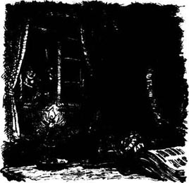
“他在读他的《圣经》，先生，”妮蒂用她最甜美轻柔的声音说。
“是的，我看得出来，”代理人说，“可没人见他去过教堂，不是吗？”
“确实是这样，但他很喜欢他的《圣经》，”妮蒂说，“我想他这会儿在打盹儿，不过上了年纪的病人这样也不稀奇。先生，你可不可以站在这里看着他在文件上签字？这样他就不会看见你，也不会觉得难受了。你能帮他这个忙吗，先生？”
“好吧，”代理人说着，掏出一支雪茄点上，抽了起来，“你把钱准备好了吗？”
“是的，”妮蒂说，“我这就拿出来。”她很快进屋拿来了钱。代理人清点了数目，把租约递给了妮蒂。
“我叔叔的手现在抖得厉害，”她说，“而且他困得迷糊了。我想他可能会签得不太好。”
“他用不着把字写得很漂亮，只要签上名字就行了。”代理人说。
“我能扶着他的手，帮他一下吗？”
“可以，帮他扶着手，姑娘——这没问题。”
妮蒂走进房子，代理人继续在窗外抽着雪茄。他看见妮蒂把笔和文件放在她叔叔跟前，碰了碰他的胳膊，跟他说了些什么，并把文件上要签名的地方指给他看，又把笔放到他手里。然后，她站到他身后，扶住了他的手。不过，代理人还是能看到一点儿老人的头，也看到老人的手在文件上签了字。
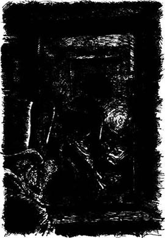
之后，妮蒂出来把文件交给代理人，代理人作为见证人也在上面签了字。最后，他把乡绅签好字的文件递给她，就离开了。第二天早上，妮蒂告诉邻居们她叔叔夜里睡觉的时候去世了。
这就是妮蒂·萨金特失而复得房子和田地的经过——当然，她还得到了一个丈夫。不过，嫁给贾斯珀是个错误。几年以后，他开始打妮蒂——打得不厉害，但却把她惹火了。后来，她跟一个邻居说了租约的事，这件事就传开了。那个时候，老乡绅已经死了，事情传到了他儿子那里。不过，妮蒂漂亮又年轻，乡绅的儿子从没理会过这件事。
* * *
很快，马车下了小山，进了长池村，乘客们纷纷下车回家了。约翰·拉克兰的儿子在“猎狗和狐狸”旅馆开了个房间，住了几天，到处走走看看，跟人们聊聊天，然后就离开了，从此再没有人见过他。
“他去了哪里？”学校教师一天在邮局问维德尔太太。
“我不知道，”维德尔太太说，“他没跟任何人打招呼，就这么走了。”
“你觉得他为什么回长池村来？”
“他说就是想看看小时候待过的地方。不过他也许是回来找老婆的，却没找到。谁知道呢？”
ACTIVITIES: Before Reading
ACTIVITIES
Before Reading
1．Read the story introduction of the book. How much do you know now about the stories? Tick one box for each sentence.
1) John Lackland's son was born in Longpuddle.
YES □／NO □
2) He has lived in Longpuddle all his life.
YES □／NO □
3) The passengers on the wagon tell him stories about Longpuddle families.
YES □／NO □
4) Tony Kytes is a clever young man.
YES □／NO □
5) Tony Kytes is married.
YES □／NO □
6) All the girls like Tony Kytes.
YES □／NO □
7) The church band still play their fiddles in church.
YES □／NO □
8) Netty Sargent wanted her uncle's house.
YES □／NO □
9) One of the stories has an animal in it.
YES □／NO □
2．What is going to happen in these stories? Can you guess? Choose answers to complete these sentences. (You can choose more than one answer if you like.)
1) Tony Kytes...
a) asks more than one girl to marry him.
b) decides not to marry any of his girlfriends.
c) is in big trouble with all his girlfriends.
d) leaves home and goes to America.
2) In the story about Andrew and Jane...
a) a fox comes into the church during their wedding.
b) a fox eats their chickens while they are at church.
c) Andrew shoots a fox in the parson's garden.
d) the parson goes fox-hunting on their wedding day.
3) The church band stop playing their fiddles in church...
a) because nobody likes their music.
b) because they play the wrong music one day.
c) because they play very badly.
d) because it's too cold in the church.
4) To get her uncle's house, Netty Sargent...
a) had to marry an old man.
b) didn't tell the truth.
c) used a dead body to help her.
d) was very unkind to her brothers and sisters.
3．You will find some of these things or people in the stories. Can you guess which ones? Tick some boxes.
| □ cars | □ guitars | □ a parson | □ a footballer |
| □ wagons | □ fiddles | □ a doctor | □ a murderer |
| □ trains | □ pianos | □ a teacher | □ a farmer |
| □ horses | □ factories | □ a nurse | □ a bride |
| □ oboes | □ bicycles | □ a detective | □ telephones |
ACTIVITIES: While Reading
ACTIVITIES
While Reading
1．Read The Wagon to Longpuddle and Tony Kytes Finds a Wife. Then complete this passage with the right names.
When ______ was driving home from market, he gave ______ a ride in his wagon. Then he saw ______ in the road, and so he asked ______ to hide in the back of the wagon. _______ got into the wagon, but very soon ______ saw _______ looking out of a window. He told ______ that ______ wanted to marry him, and he asked ______ to hide under the sacks in the front of the wagon. When ______ got in, ______ had three girls in his wagon. He went to ask his father what to do, and left ______ holding the horse. But ______ saw ______'s foot under the tarpaulin and spoke to her. ______ heard voices, and then the horse moved off and turned the wagon over. In the end ______ asked all three girls to marry him — first ______, then _______, then _______, but only _______ said yes.
2．Read Andrew, Jane, the Parson, and the Fox to the bottom of page 30. Can you guess how the story ends? Choose answers to these questions.
1) When does the parson remember Andrew and Jane?
a) That evening.
b) In the night.
c) The next day.
d) Two days later.
2) What do Andrew and Jane do during the day?
a) Call for help.
b) Climb out and go home.
c) Have a fight.
d) Just wait
3) When do Andrew and Jane get married?
a) That evening.
b) The next day.
c) The next week.
d) Never.
3．Read The Church Band, and then put these halves of sentences together.
1) The band drank hot brandy-and-water...
2) They didn't hear when the sermon finished...
3) When they woke up, they began to play dance music...
4) The squire bought an organ for the church...
5) because they thought they were still in the Dog and Fox.
6) because they were all sleeping like babies.
7) because he didn't want those wicked men to play their fiddles in church ever again.
8) because it was so cold in the church.
4．Read Netty Sargent and the House. Who said these words, and who were they talking to?
1) 'The house, garden and field will go back to the squire.'
2) 'If you lose the house and ground, I won't marry you.'
3) 'And you must have Jasper, must you, my dear?'
4) 'Can you still be a witness, ...if he doesn't see you?'
5) 'Yes, hold his hand, ... — that'll be all right.'
ACTIVITIES: After Reading
ACTIVITIES
After Reading
1．Here are some Longpuddle villagers talking. Who are they talking about? Complete the passages with the words below (one word for each gap).
agent, bride, clever, dead, held, hunt, husband, leasehold, like, locked, married, remember, same, signed, three, uncle, until, when, window, witness
1) '... So she asked the ______, who had to be the _______, to stand outside the ______. Then she took the ______ papers into the room, put them in front of her ______, spoke to him, and ______ his hand while he ______ his name. And all the time the old man was ______!'
2) 'No, he hasn't been out with the ______ for a long time. And I know why! He still feels bad about that time ______ he left a young man and his ______ in the church all night. They were ______ in the tower, and he didn't ______ them ______ the next day.'
3) 'Yes, they're getting ______ next Sunday. I don't know if he'll be a good ______ or not. All the girls ______ him, but he's not very ______. Somebody told me that he once asked ______ girls to marry him on the ______ day!'
2．Here is a new illustration for one of the stories. Find the best place for it, and answer these questions.
The picture goes in the story ______.
1) Who are these two people?
2) What is the man near the door saying?
3) Why are they both very worried?
Now write a caption for the illustration.

Caption: ____________________________________
3．What did Nicholas say to the parson about the music, later that day? Put their conversation in the right order, and write in the speakers' names. Nicholas speaks first (number 3).
1) ______ 'Yes, it was. We weren't doing anything wicked.'
2) ______ 'We're going to have an organ. The squire has already sent away for it, and it'll be here by Friday.'
3) ______ 'It was like this, Parson. When we woke up, it —'
4) ______ 'But you were in church, not in the Dog and Fox!'
5) ______ 'Thank you, Parson! So can we play next Sunday?'
6) ______ 'And was that why you played dance music?'
7) ______ 'It was only a little sleep. We were tired, you see, because of playing last night in the Dog and Fox.'
8) ______ 'I'm afraid not. The squire said no more fiddles.'
9) ______ 'Yes, I know, but it was dark, we were half asleep, and we thought we were still at the dance!'
10) ______ 'Woke up? You were asleep during my sermon?'
11) ______ 'But who will play the music in church then?'
12) ______ 'I know you're not a wicked man, Nicholas. Nor are the others. All right, we'll say no more about it.'
Which part of the story did Nicholas not tell the parson?
4．What did Andrew and Jane say in the church tower? Finish Jane's words for her. (Use as many words as you like.)
ANDREW: It's nearly dark. What are we going to do, Jane?
JANE: We're going to ______.
ANDREW: But I'm hungry. We can't wait for him all night!
JANE: I'm sure ______.
ANDREW: Well, I think he's forgotten us. I'll go up and shout from the top of the tower, to get help.
JANE: _______.
ANDREW: Why not?
JANE: Because of the disgrace. Everybody ______.
ANDREW: Oh. Yes, they will, won't they? We'll just have to sit and wait then.
5．Here are some new titles for the stories. Which titles go with which stories? Which titles do you like best? Why?
| A Night in the Tower | Dreaming of the Dog and Fox |
| A Wagon Full of Girls | Witness at the Window |
| The Leasehold Wedding | When the Fiddles Had to Stop |
| A Dead Man's Hand | Engaged Three Times |
| Milly Gets Her Man | A Dance Tune for the Squire |
| An Anxious Bride | The Call of the Hunt |
6．What did you think about these stories? Choose some of the characters and complete these sentences.
1) I felt sorry for ______ because ______.
2) I thought ______ was clever/stupid when ______.
3) I thought ______ did a good/bad thing when ______.
4) I thought ______ was right/wrong to ______.
5) I liked it when ______.
封底